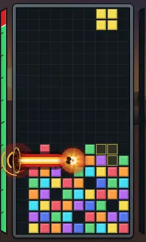
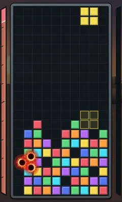
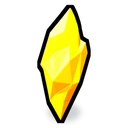

Spoilers: this page gives away the end of the Red Desert Story.
Lesser Cult Leader
Lesser Cult Leader is an elite monster met in Research Station. One of the Sand Veil's officers, who runs the dig. He fights as the Cult Leader does, with portals and fireballs into your stack and then a ward against your next hit.
Attacks
| Attack | Style | What it does | On the board |
|---|---|---|---|
| Sun Portal | Magic | A lance from a wall tears out half of one row, then bounces off the far wall and tears out half of the row below it. Fill both rows together. |  |
| Sun Ring | Magic | Three sun discs come down as a ring of fire, burning out up to 12 blocks two cells round one spot and leaving the middle standing. Build back round it. |  |
| Sun Shield | Magic | His Sun Shield goes up, and every hit lands at a quarter while it stands. A spin or a clear of two lines breaks it, and that hit lands whole. |  |
Each clip is the real fight's board, filmed from the game. It plays once it scrolls into view.
The game's advice: His Sun Shield takes most of every hit. Save a spin or a double line for it, then hit hard.
Weakness: spins hit it 10% harder.
Strategy
How to beat Lesser Cult Leader: gear, skills and what to do on the board, in a player's words.
Locations
- Research Station, in the Red Desert Story (fight 3 of the road)
- the Endless Dungeon's Research Station: a round boss; the warden its chest follows
Combat stats
| Where | Health | Hit | Attacks every | Experience |
|---|---|---|---|---|
| Red Desert Story | 960 | 8–10 | Its own clock | 120 |
| Endless Dungeon, fight 1 | 1,440 | 12–15 | Its own clock | 300 |
| Endless Dungeon, fight 11 | 1,632 | 13–16 | Its own clock | 324 |
| Endless Dungeon, fight 21 | 1,920 | 14–18 | Its own clock | 360 |
| Endless Dungeon, fight 41 | 2,496 | 16–20 | Its own clock | 482 |
| Dark Endless Dungeon, fight 1 | 1,920 | 16–20 | Its own clock | 480 |
| Dark Endless Dungeon, fight 11 | 2,112 | 17–21 | Its own clock | 504 |
| Dark Endless Dungeon, fight 21 | 2,400 | 18–23 | Its own clock | 540 |
| Dark Endless Dungeon, fight 41 | 2,976 | 20–25 | Its own clock | 662 |
Hit is the range before your Armor takes its share. In the Endless Dungeon and its Dark an enemy grows tougher with every round of fights; champions and omens change it further. A kill from fight 25 on, in Onslaught, pays 50 experience on top.
Drops
Each kill rolls its table twice in the Red Desert Story, twice in the Endless Dungeon and three times in its Dark. Every row is rolled on its own, so a kill can pay several.
| Item | Quantity | Rarity | Log |
|---|---|---|---|
 Gold Coin Gold Coin | 80–140 | 66.67% | |
 Sunstone Shard | 2–4 | 29.29% | ✓ |
 Nettle Fabric Nettle Fabric | 1–2 | 10.56% | |
 Horn Chunks Horn Chunks | 1–3 | 1/11 | |
 Minor Healing Potion Minor Healing Potion | 1 | 1/15 | |
 Adamantite Ingot Adamantite Ingot | 1 | 1/39 | |
 Darkwood Log Darkwood Log | 1 | 1/99 | |
 Cultist Book Cultist Book | 1 | 1/120 | ✓ |
 Magic Ring Magic Ring | 1 | 1/149 | ✓ |
 Sunstone Staff Sunstone Staff | 1 | 1/299 | ✓ |
 Cult Idol Cult Idol | 1 | 1/1,000 | ✓ |
Every kill also rolls
| Item | Quantity | Rarity | Notes |
|---|---|---|---|
| Rare Drop table (The Red Desert) | — | 1/64 | Once a kill, whatever the mode |
 Respec Orb Respec Orb | 1 | 1/6,024 | A run's first kill; rises each kill to 1/2,000 from the 50th |
| Gilded Ornament Kit | 1 | 1/1,000,000 | Every kill everywhere |
 The Old Man's Chain The Old Man's Chain | 1 | 1/4 | Only while a quest asks for it |
Rare Drop table (The Red Desert)
One kill in 64 rolls this list once, apart from the enemy's own table. Rare Drops never count toward the Collection Log.
| Item | Quantity | Rarity |
|---|---|---|
| Gold Coin | 300–800 | 1/427 |
 Coal Coal | 40–80 | 1/427 |
 Mithril Ingot Mithril Ingot | 4–8 | 1/400 |
 Rugged Hide Rugged Hide | 2–4 | 1/533 |
| Adamantite Ingot | 2–3 | 1/533 |
 Ipe Plank Ipe Plank | 2–3 | 1/640 |
| Nettle Fabric | 2–3 | 1/800 |
 Duskhide Duskhide | 1 | 1/1,600 |
| Magic Ring | 1 | 1/3,200 |
 Magic Chain Magic Chain | 1 | 1/3,200 |
 Treasure Seal Treasure Seal | 1 | 1/6,400 |
 Orichalcum Ingot Orichalcum Ingot | 1 | 1/6,400 |
 Darkwood Plank Darkwood Plank | 1 | 1/6,400 |
 Lotus Cloth Lotus Cloth | 1 | 1/6,400 |
Collection Log
Lesser Cult Leader has a page under ENEMIES in the Collection Log, in its MONSTERS section. It lists:
In the game each slot stays hidden until it drops for you.
Gallery

Trivia
Design notes and anything else worth knowing.
Changes
What changed for Lesser Cult Leader, update by update.
| Enemies | |
|---|---|
| Greenshore Story | Zombie · Slime · Squirrel · Cyclops · Oak Entling · Bandit · Bandit King · Super Zombie · Punchy · Shooty · Bernie · Bandit Elite · Cultist · Cult Leader |
| Red Desert: Dust Bowl | Sand Zombie · Wormling · Desert Worm |
| Red Desert: Sand Storm | Raider · Scrap Warlord |
| Red Desert: Pyramids | Sand Zombie · Mummy · Possessed Sarcophagus |
| Red Desert: Sand Cave | Rockling · Cave Spider · Sandstone Golem |
| Red Desert: Research Station | Sand Veil Cultist · Lesser Cult Leader · The Old Man |
| Red Desert: Hellish Desert | The Unbound |
| Elsewhere | Garbage Man · Slime King |